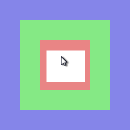

Cel is a pure Lua library. It is desigend to be embedded into a host application. The host application must provide Cel with input from the user and access to system resources, and also provide rendering for Cel.
Before Cel is usable we need to install a driver for it, the driver is responsible for provding device input, fonts, clipboard access and other miscellaneous functions that are platform specific. This section is meant to serve as an example on how to create the driver and use it to drive Cel.
We will create a module for our driver, that will allow any love application to use Cel by requiring this module. See not yet defined source listing for the comlete source for this module.
To embed Cel. First require the cel module.
local cel = require 'cel'
We add new table in the global love table, to allow the love application to interface with the Cel driver. (We will use the love.cel table later to define cels that are dependent on the love platform.) We are also making love.cel a proxy for cel.
love.cel = setmetatable({}, {__index = cel})
Before we install the driver Cel requires a table that maps the platform key codes and states to the names that Cel will use (for the mouse and keyboard). This mapping has a big advantage, all events from Cel will use the plaform codes. What that means is that this the application developer can use the love codes for callbacks like this:
local example = cel.new(100, 100) --create a cel with specified width and height
function example:onkeydown(key)
if key == 'escape' then
love.event.push('q') -- quit the game
end
end
Using the platforms keycodes is great unless you write a new cel that you want to use on multiple platforms, in that case you would use the cel to access the keycodes by name, like this:
local example = cel.new(100, 100) --create a cel with specified width and height
function example:onkeydown(key)
if key == cel.keyboard.keys.escape then
--do something that is platform agnostic
end
end
Cel will acess the buttons table with keys 'left', 'right', 'middle', to get the code for mouse buttons. Love uses the 'l', 'r', 'm' as the codes for left, right, and middle mouse buttons.
local mouse = {
buttons = {
left = 'l',
right = 'r',
middle = 'm',
},
--love has no codes for the mouse state, so we will use the names cel uses.
states = {
unknown = 'unknown',
normal = 'normal',
pressed = 'pressed',
},
wheeldirection = {
up = 'wu',
down = 'wd',
},
}
As of now Cel uses the exact key codes that love uses becuause it is fairly complete and there is no universal standard. The keyboard should define this mapping in the keys table.
local keyboard = {
--we don't actually have to define this for love, since they are the same
--the keys will match the values
keys = setmetatable({}, {__index = function(t, k, v) return k end}),
--love has no codes for the key states, so we will use the names cel uses.
--The 'repeat' state indicates the key is being held down
states = {
unknown = 'unknown',
normal = 'normal',
pressed = 'pressed',
['repeat'] = 'repeat',
}
}
With the mouse and keyboard mappings defined we can install the driver. A proxytable is returned which will be a bidirectional interface.
local driver = cel.installdriver(mouse, keyboard)
The driver module should define these functions in the driver table retured by cel.installdriver. They will be called by cel if they are provided.
To provide mousemove input to Cel, we have to poll the mouse position from love. We will use a strategy that defines a function in the love.cel table to be called by the love app from the love callback of the same name. As a convenience we define the callbacks if they are not already defined by the app at this point.
do --driver.timer, driver.mousemove
if not love.update then
function love.update(dt)
love.cel.update(dt)
end
end
--on each update we call mousemove and timer on the driver
function love.cel.update(dt)
function love.cel.update(dt)
driver.mousemove(love.mouse.getX(), love.mouse.getY())
driver.timer(love.timer.getTime()*1000);
end
--On the first update resize the root
driver.root:resize(love.graphics.getWidth(), love.graphics.getHeight())
love.cel.update(dt)
end
end
do --driver.mousewheel, driver.mousedown
if not love.mousepressed then
function love.mousepressed(...)
return love.cel.mousepressed(...)
end
end
function love.cel.mousepressed(x, y, button)
--love treats the mousewheel like a button press
if 'wu' == button then
driver.mousewheel(x, y, 'wu', 1)
elseif 'wd' == button then
driver.mousewheel(x, y, 'wd', 1)
else
driver.mousedown(x, y, button)
end
end
end
do
if not love.mousereleased then
function love.mousereleased(...)
return love.cel.mousereleased(...)
end
end
function love.cel.mousereleased(x, y, button)
--we have to filter wheel buttons here, cel has no concept of the wheel as a button
if 'wu' ~= button and 'wd' ~= button then
driver.mouseup(x, y, button)
end
end
end
do --driver.keydown, driver.keypress, driver.char, driver.command
if not love.keypressed then
function love.keypressed(...)
return love.cel.keypressed(...)
end
end
function love.cel.keypressed(key, unicode)
--love does not distinguish a keypress and keydown event, so check cel keyboard to see
--if the key is already down, if so send the keypress instead of keydown
if cel.keyboard:isdown(key) then
driver.keydown(key)
else
driver.keypress(key)
end
local isDown = love.keyboard.isDown
--send copy/cut/paste commands, using standard windows keys, love does not abstract
--this so we have to interpret.
if isDown('lctrl') or isDown('rctrl') then
if key == 'c' then
driver.command('copy')
return
elseif key == 'x' then
driver.command('cut')
return
elseif key == 'v' then
driver.command('paste')
return
end
end
--get the char for the unicode and pass to driver.char
--restricting the codeset used becuase love font does not
--handle others well
if unicode <= 255 and unicode >= 32 then
driver.char(string.char(unicode))
end
end
end
do --driver.keyup
if not love.keyreleased then
function love.keyreleased(...)
return love.cel.keyreleased(...)
end
end
function love.cel.keyreleased(key)
driver.keyup(key)
end
end
Call from love.draw. Cel does not draw itself, and has no concept of drawing primitives such as images, polygons, lines, etc. The host app must render, and is free to do so however seems best. Cel provides a description of a cel, which includes all the information necessary to draw a cel. See the rendering section.
do --draw
if not love.draw then
function love.draw()
love.cel.draw()
end
end
--cel.describe will returns a table containing a description of what the visible
--cels, and true if this table is not identical to the last table returned.
function love.cel.draw()
local t, refresh = cel.describe()
t.drawtimestamp = cel.timer() --TODO don't put timestamp in here
t.description.face:draw(t.description)
end
end
This is where embedding gets the most difficult if you don't already have decent font rendering/metrics. Cel does not provide this, but expcets some basic font metrics, they may seem complex, and it is, but doesn't even scratch the surface of the real complexity involved with proper glyph rendering.
love.graphics.setFont(12) --TODO don't do this, don't remeber exactly why i had to do it initally, but
--this is not a nice thing to do
The driver is required to implement the loadfont function. cel.loadfont() will call driver.loadfont to create a new font. When a font is loaded through cel.loadfont() it caches the result, so it is unecesasry to do this in the driver implementation. Then name of the font passed to loadfont is unrestricted, the cel demos use 4 names, so implementing these names is a good idea if you want to run the demos:
A font returned from load font will be included in the description of a cel that uses the font. For that reason you should also include any additional information in the font that will be needed for your renderer. For love, we store a reference to the love font retruned by love.graphics.newFont().
Love does not give us the font metrics we need to work with, but it gives us some and we can fudge the others. The result of this fudging will be imperfect alignment of the glyphs when cel makes measurements. It is not unusual to have minimal font metrics, and cel is designed with this is mind, as you will see later.
do --driver.loadfont
--map demo font names to location of fonts in love directory
local namemap = {
code = 'fonts/cour.ttf',
monospace = 'fonts/cour.ttf',
serif = 'fonts/Anonymous Pro.ttf',
sansserif = 'fonts/VeraMono.ttf',
}
--name is an unrestricted value
--weight will be either 'normal' or 'bold'
--slant will be either 'normal' or 'italic' or 'oblique'
--size is the fonts size in pixels (size of what exactly is up to the driver to decide
--a sensible choice is the size of the em square)
function driver.loadfont(name, weight, slant, size)
name = namemap[name]
local font = {}
--create a love font and store it as font.nativefont to be used by our renderer
if name then
font.nativefont = love.graphics.newFont(name, size)
else
font.nativefont = love.graphics.newFont(size)
end
local nativeheight = font.nativefont:getHeight()
do --calculate font bbox, love does not provide most of the metrics that cel requires,
--but we can still make it work by guessing picking reasonable values based on the
--font metrics is does provide. The most important metric for cel is the advance,
--love does supply that metric. These can be tweaked based on the font through trial
--and error, or you can use outside means, such as freetype to store the metrics in
--a file.
font.bbox = {
xmin = 0,
xmax = 0,
ymin = -(nativeheight - math.floor(nativeheight * .8)), --fudge it
ymax = math.floor(nativeheight * .8), --fudge it
}
end
font.lineheight = font.nativefont:getHeight()
font.ascent = font.bbox.ymax
font.descent = -font.bbox.ymin
local function newglyph(fontmetrics, glyph)
local char = string.char(glyph)
--no glyph metrics from love, we can get the horizontal advance at least
local xmin, xmax, ymin, ymax = 0, font.nativefont:getWidth(char), font.bbox.ymin, font.bbox.ymax
fontmetrics[glyph] = {
glyph = glyph,
char = char,
advance = font.nativefont:getWidth(char),
xmin = xmin,
xmax = xmax,
ymin = ymin,
ymax = ymax,
}
return fontmetrics[glyph]
end
--Don't calculate the glyph metrics until it is asked for.
font.metrics = setmetatable({}, {__index = newglyph})
return font
end
end
We set the key repeat, by default it is off in love. Not very nice of our driver.
love.keyboard.setKeyRepeat(450, 35)
Our driver will return a cel to be used as the root cel for the love app. We don't return the real root cel because we want our driver to have sole control of it. You don't have to understand this right now, you will after going through the tutorials on linking.
return driver.root:newroot():link(driver.root, 'edges')
This module will define how we render a cel. The approach taken here is just one way to do it, how you choose to render will depend on the rendering capabilitis you have available.
local cel = require 'cel'
Lets take a look at the information provided in a cel description. The description is obtained by calling cel.describe().
In the description of the white cel mousefocus would be 1. For the red, blue and green cels it would be true.
This is an example description that of Fig 1.
--TODO capture this and paste it in here
A cel face is a place for the renderer to store information that it needs to render a cel. A single face can be shared by multiple cels or a cel can have its own unique face. In most cases though you would have a face that is used for buttons, another for listboxes, another for labels and so on.
The renderer is a good place to define faces, but doesn't have to be the only place. This is how you create a face:
local face = cel.face {
metacel = 'cel'
}
We just defined a face that can be used by any cel ('cel' is the name of the default metacel, all other cels 'inherit' from the 'cel' metacel). The metacel entry indicates what metacel this face is for.
Lets add something to the face that we can use to render the cel, like a color
local face = cel.face {
metacel = 'cel',
color = 'red',
}
Now when we see a face in the description our renderer can get the color out of the face and use that when rendering the cel. An important point is that Cel does not care what the color is, nor does it understand the meaning of the color entry in the face, this definition is something that your renderer and app understand. There are some entries that cel does understand, and defines the meaning of. These entries are reserved by Cel:
I will go into a deeper explanation of font, layout and flow later. Any properties in the 'cel' metacel face are also properties of other faces (via __index metamethod).
This defines a face for a button. The metacel = 'button' entry is what makes it a button face.
local buttonface = cel.face {
metacel = 'button',
bordercolor = 'blue',
}
A 'button' metacel inherits from the 'cel' metacel (as do all cels). The face defined for a metacel will inherit properties of the face defined for the metacel it inherits from. In this case buttonface.color == 'red'
This define a face for a textbutton. The textbutton metacel inherits from the button metacel.
local textbuttonface = cel.face {
metacel = 'textbutton',
color = 'green',
}
textbuttonface inherits bordercolor from buttonface but overrides the color. If there was no entry for color in the textbuttonface then it would use the value from the 'cel' face.
It is many times necessary to define multiple faces for the same metacel, for instance if we want buttons to be different colors. To do that you have to give the face a name like this:
local purplebuttonface = cel.face {
metacel = 'button',
name = 'purplebutton'
color = 'purple',
}
Notice that buttonface was not given a name, what a face does not have a name it becomes the face for the metacel and any other face for that metacel will inherit properties from it. So in this case purplebuttonface.bordercolor == 'blue'
If a button is created like this:
local button = cel.button.new(100, 100) then it will use the unnamed face for the button metacel. To create a button with an alternate face, you can pass it in as the last parameter like this:local button = cel.button.new(100, 100, 'purplebutton'). When the button is created it will lookup a face with the name purplebutton. You can also pass a reference to the face directly like this:local button = cel.button.new(100, 100, purplebuttonface). In addition the name of a face is not restricted to a string, which is useful for creating private faces.
TODO explain when face inheritance happens, not when it is created but wehn the metacel is created.
This example renderer will use the painters algorithm to render each cel, we start by drawing the root cel and then any will go through the cel descriptions from bottom to top(from n to 1) drawing each one.
We will start by defining the face for the 'cel' metacel, any properties we put in here will be available to all other faces.
local face = cel.face {
--metacel = 'cel', this is the default metacel, we don't have to specify it
font = cel.loadfont(),
textcolor = cel.color.rgb(255, 255, 255),
fillcolor = cel.color.rgb(200, 200, 200),
linecolor = cel.color.rgb(200, 200, 200),
}
The 3 ****color entries are ignored by Cel, but the we want to run the demo and the demo apps will use these names to specify colors for some cels. When you create your own faces for your app, you may decide to not use this approach. The next step is to draw a cel based on its description when using this face.
--this function sets the current color, the color argument is a 4 byte string with each byte representing red, green, blue, alpha respectively. Take note of when we return true or false.
local function setcolor(color)
if not color then return false end
local r, g, b, a = cel.color.decode(color)
if a == 0 then return false end
love.graphics.setColor(r, g, b, a)
return true
end
--this function clips our drawing to the the retangle defined by t,
--t is expected to be in the format of the clip table from a cel description.
local function clip(t)
love.graphics.setScissor(t.l, t.t, t.r-t.l, t.b-t.t)
end
--draws a rectangle outline in the current color.
--The r parameter represent corner radius for rounded rectangles, we will ignore it for now.
local function strokerect(x, y, w, h, r)
love.graphics.rectangle('line', x+.5, y+.5, w, h)
end
--draws a filled rectangle in the current color.
--The r parameter represent corner radius for rounded rectangles, we will ignore it for now.
local function fillrect(x, y, w, h, r)
love.graphics.rectangle('fill', x, y, w, h)
end
local function printstring(font, x, y, text, i, j)
love.graphics.setFont(font.nativefont)
if i then text = text:sub(i, j) end
return love.graphics.print(text, x, y - font.bbox.ymax)
end
local function drawlinks(t)
for i = #t,1,-1 do
local t = t[i]
t.face:draw(t)
end
end
This is the draw function that all faces will use (unless they redefine it). Notice
that it will draw colors if they are set. When the face is done drawing it calls drawlinks.
function face:draw(t)
if self.color then
if setcolor(self.color) then
clip(t.clip)
fillrect(t.x, t.y, t.w, t.h)
else
if setcolor(self.fillcolor) then
clip(t.clip)
fillrect(t.x, t.y, t.w, t.h)
end
if setcolor(self.linecolor) then
clip(t.clip)
strokerect(t.x, t.y, t.w, t.h)
end
end
else
end
return drawlinks(t)
end